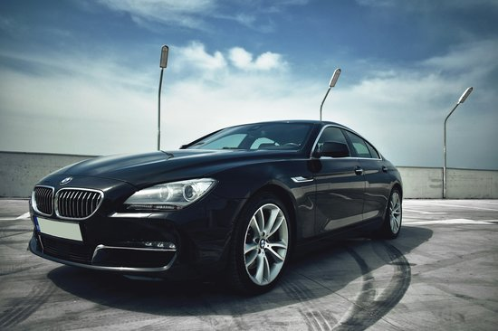
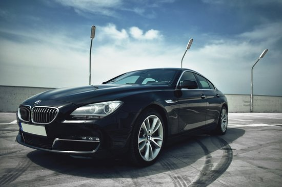
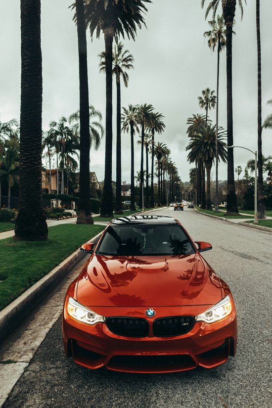
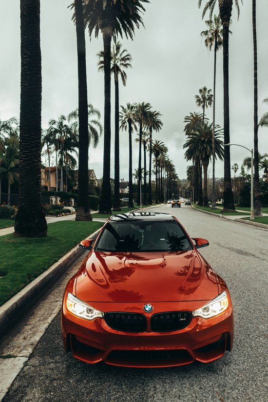

BMW
BMW Serija 3 je sinonim za dinamično vožnjo in športno eleganco. Z izjemno zmogljivostjo in napredno tehnologijo zagotavlja popolno ravnovesje med močjo in udobjem. Vsak detajl je skrbno oblikovan, da ustreza najvišjim standardom.
BMW X5 je vrhunski SUV, ki združuje zmogljivost ter luksuz. Prostornost in napredni sistemi za pomoč vozniku naredijo vsak prevoz udoben in varen, ne glede na terensko zahtevnost. Idealen za družinske in avanturistične vožnje.

BMW i8 je futuristični športni avto, ki združuje električno energijo in visoke zmogljivosti. Eleganten dizajn ter okolju prijazna tehnologija predstavljata prihodnost mobilnosti, ki navdušuje z vsako podrobnostjo in vožnjo.
Luksuzna limuzina BMW Serija 7 postavlja nove standarde v svetu prestižnih vozil. Izjemen prostor, vrhunski materiali in napredni sistemi udobja poskrbijo, da je vsak trenutek v avtu užitek, ki ga ne pozabiš.
BMW M4 je prava izbira za ljubitelje športne vožnje. Z močnim motorjem, natančnim krmiljenjem in aerodinamičnim dizajnom zagotavlja nepozabne zmogljivosti na cesti. Vsak ovinek je izziv, ki ga M4 obvlada z lahkoto.
BMW Z4 je športni kabriolet, ki združuje užitek v vožnji na prostem z vrhunsko tehnologijo. Njegov eleganten dizajn in dinamične zmogljivosti zagotavljajo nepozabne trenutke ob vsakem potovanju.


 



 
